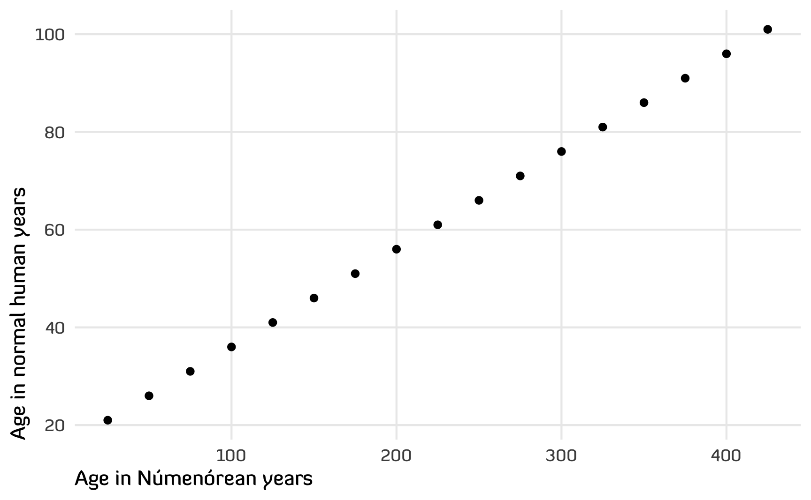
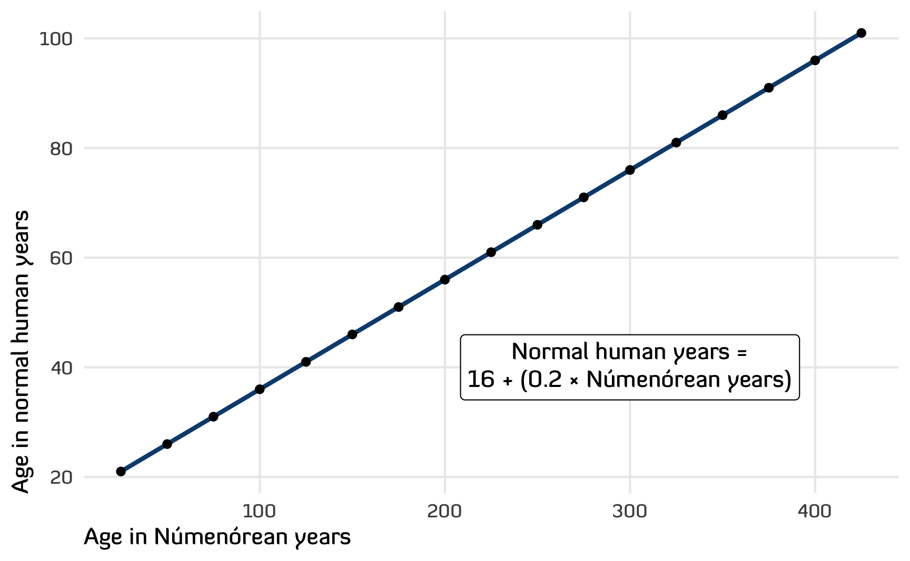
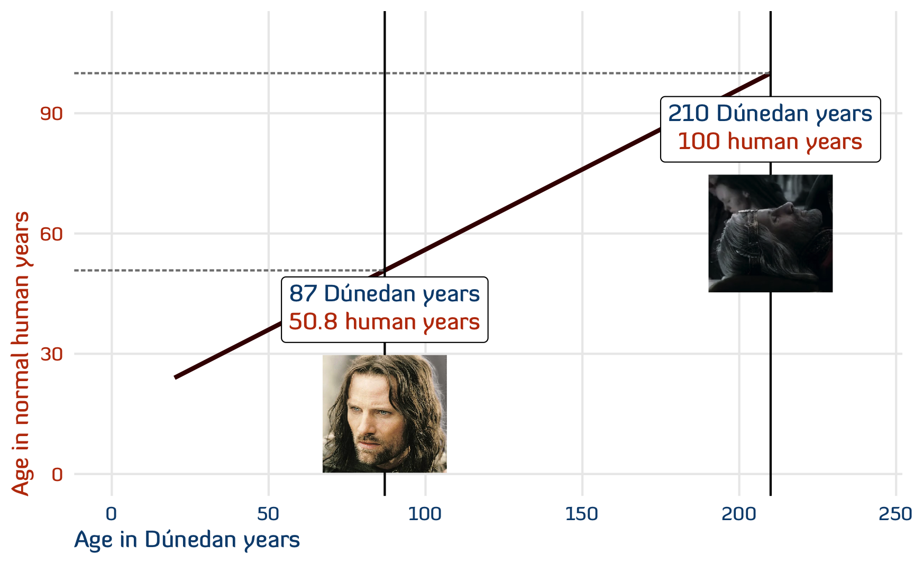
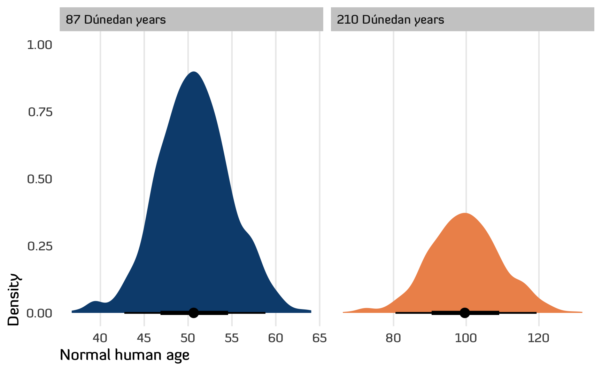

Use statistical simulation and a hidden table of Númenórean ages from Tolkien’s unpublished works to convert Aragorn’s Dúnedan years to actual human years
In The Two Towers, while talking with Eowyn, Aragorn casually mentions that he’s actually 87 years old.
Aragorn announcing his age
When Aragorn is off running for miles and miles and fighting orcs and trolls and Uruk-hai and doing all his other Lord of the Rings adventures, he hardly behaves like a regular human 87-year-old. How old is he really?
It turns out that Tolkien left us a clue in some of his unfinished writings about Númenor, and we can use that information to make some educated guesses about Aragon’s actual human-scale age. In this post I’ll (1) look at Tolkien’s Númenórean years → human years conversion system and (2) extrapolate that system through two types of statistical simulation—(a) just drawing random numbers and (b) Bayesian modeling—to make some predictions about a range of possible ages.
But first, some context about why Aragon is so old!
Super quick crash course in the Ages of Arda + Númenor
The Lord of the Rings occurs at the end of the Third Age of the world. In Arda (the whole world Tolkien created) there are four recorded ages, plus some pre-game stuff:
The First Age: After the creation, the Elves all lived in a place outside of the main world called Valinor until the main bad guy, a fallen Ainu named Morgoth (aka Melkor) destroyed key parts of it and divided the Elves so that a bunch fled to the far west of Middle-earth to a land called Beleriand. This starts the First Age, which is mostly about the Elves of Beleriand and their battles with Morgoth/Melkor. Sauron (the main bad guy of The Lord of the Rings) serves as Morgoth’s lieutenant and they destroy a ton of cities (with armies of balrogs and orcs) and kill a ton of elves. The elves eventually win, but all of Beleriand sinks into the ocean and the elves either go back to Valinor (technically just outside of Valinor, which serves as elvish heaven), or to eastern Middle-earth. This is all covered in the bulk of The Silmarillion.
The Second Age: While the First Age is mostly about elves, mortal men eventually show up in Beleriand and they play a key role in the battle against Morgoth. They also intermingle with the immortal elves, sometimes falling in love—including the famous Lúthien and Beren (who are stand-ins for Tolkien and his wife Edith). Beren and Lúthien had kids, and their kids had kids, and so on until two half-elf brothers were born at the end of the First Age: Elrond (the same Elrond from The Hobbit and The Lord of the Rings and The Rings of Power) and Elros.
As Beleriand sinks, Elrond and Elros escape to eastern Middle-earth and are then given a choice of how to proceed with their futures. Elrond decides to become immortal like an elf; Elros decides to become mortal like a man, eventually building Rivendell. The gods reward Elros and the men who helped the elves against Morgoth by creating a utopic island in the middle of the ocean between Valinor and Middle-earth named Númenor. The gods also granted them super long life (400+ years, as we’ll explore below), but imposed a strict ban on them—the Númenóreans were forbidden from ever sailing west toward Valinor. Thus begins the two parallel stories of the Second Age—(1) Elrond and other refugees from Valinor doing stuff in Middle-earth, and (2) Elros and his descendants doing stuff on the island of Númenor. This is all covered in a final short part of The Silmarillion (the Akallabêth), and in random appendices in The Lord of the Rings, and in the newer The Fall of Númenor, and in Amazon’s TV series The Rings of Power.
Númenor and Middle-earth hum along happily for three thousand years until Sauron (who fled to Middle-earth after Morgoth was destroyed) shows up. He disguises himself as a super affable friendly dude who everyone loves and then sows chaos. He visits the elves and convinces them to make a bunch of rings, and then he heads to Númenor to convince them to violate the ban and sail to Valinor. The Númenóreans do, they get in trouble, the gods sink their island, and Númenórean refugees flee to Middle-earth, led by Elendil and his sons Isildur and Anárion, who set up a Númenórean kingdom in Gondor. Sauron starts using his fancy new One Ring and tries to conquer Middle-earth; there’s a big war against him (see the first few minutes of The Fellowship of the Ring); Sauron kills Elendil; Isildur cuts off Sauron’s finger and makes him lose the ring, which destroys him; Isildur keeps the ring; he gets killed and the kingdom of Gondor falls, thus ending the Second Age.
The Third Age: The ring disappears for a few thousand years until Gollum picks it up, then Bilbo gets it in The Hobbit, and then Frodo gets it in The Fellowship of the Ring and destroys it in The Return of the King.
Meanwhile, Gondor is ruled by a series of stewards who are supposed to take care of the kingdom until a Númenórean king returns to take his place. The magic long life of the Númenóreans starts declining, except for some special refugees from Gondor named the Dúnedain (singular Dúnadan), of which Aragorn is one. These Dúnedain maintain some of the magic Númenórean longevity—they don’t live 400+ years like their Númenórean ancestors, but they live well beyond 150. After the ring is destroyed, Aragorn is installed as king of Gondor, all the remaining elves go back to Valinor (except Arwen, Aragorn’s now-wife), and the Third Age ends.
The Fourth Age: Aragorn reigns until he’s 210, then he dies, someone else takes over, and Middle-earth lives happily ever after.
Packages
Before diving into the data and simulations, we need to load some R libraries and make some helper functions. For the sake of narrative here, the code is automatically collapsed—click on the little triangle arrow to show it.
Tolkien’s Númenórean years → normal human years system
In the appendix of the newly published The Fall of Númenor and Other Tales From the Second Age of Middle-earth is a fascinating footnote that explains exactly how to convert Second Age Númenórean years into normal human years. Tolkien writes:
Deduct 20: Since at 20 years a Númenórean would be at about the same stage of development as an ordinary person.
Add to this 20 the remainder divided by 5. Thus a Númenórean man or woman of years [X] would be approximately of the “age” [Y] (Tolkien 2022, “The Life of the Númenóreans,” note 8, p. 262)
And he provides this helpful table, which we’ll stick in an R data frame so we can play with it:
ages|>rename("Númenórean age"=numenor_age,"Normal human age"=normal_human_age)|>t()|>knitr::kable()
Table 1: Tolkien’s original table for converting between Númenórean and human ages
Númenórean age
25
50
75
100
125
150
175
200
225
250
275
300
325
350
375
400
425
Normal human age
21
26
31
36
41
46
51
56
61
66
71
76
81
86
91
96
101
Tolkien’s logic is a little convoluted, but it works. For example, if a Númenórean is 125, subtract 20, then divide the remainder by 5 and add that to 20 to get 41 normal human years:
If we plot all of Tolkien’s example ages, we get a nice linear relationship between Númenórean ages and human ages:
Code
ggplot(ages, aes(x =numenor_age, y =normal_human_age))+geom_point()+labs(x ="Age in Númenórean years", y ="Age in normal human years")+theme_numenor()

Figure 1: Scatterplot of Tolkien’s original table for converting between Númenórean and human ages
Since it’s linear, we can skip the convoluted subtract-20-add-divided-remainder logic and instead figure out a slope and intercept for the line.
Code
age_model<-lm(normal_human_age~numenor_age, data =ages)age_model## ## Call:## lm(formula = normal_human_age ~ numenor_age, data = ages)## ## Coefficients:## (Intercept) numenor_age ## 16.0 0.2
The line starts at the y-axis at 16 normal human years and then increases by 0.2 for every Númenórean year (the 0.2 is that divide-by-5 rule, since 1/5 = 0.2).
ggplot(ages, aes(x =numenor_age, y =normal_human_age))+geom_smooth(method ="lm", color =clrs[3])+geom_point()+labs(x ="Age in Númenórean years", y ="Age in normal human years")+annotate(geom ="richtext", x =300, y =40, label ="Normal human years =<br>16 + (0.2 × Númenórean years)")+theme_numenor()

Figure 2: Linear model for converting between Númenórean and human ages
Estimating the Dúnedain → normal human age system
Aragorn was a Dúnedan, or a descendant of the Númenórean refugees Elendil and Isildur, so he inherited their unnaturally long lifespan. Aragorn was 87 at the end of the Third Age, and he lived until he was 210. If we naively assume he lived as long as a standard Númenórean, he would have gone through the events of The Lord of the Rings at 33 and died surprisingly young at 58:
Code
ggplot(ages, aes(x =numenor_age, y =normal_human_age))+geom_smooth(method ="lm", color =clrs[3])+geom_point()+geom_vline(xintercept =c(87, 210))+annotate(geom ="segment", x =-Inf, xend =87, y =33, yend =33, linewidth =0.5, linetype ="21", color ="grey50")+annotate(geom ="segment", x =-Inf, xend =210, y =58, yend =58, linewidth =0.5, linetype ="21", color ="grey50")+geom_image(data =tibble(numenor_age =87, normal_human_age =80, image ="img/aragorn-alive.jpg"),aes(image =image), size =0.15, asp =1.618)+annotate(geom ="richtext", x =87, y =62, label =glue("<span style='color:{clrs[1]};'>87 Númenórean years</span>","<br>","<span style='color:{clrs[6]};'>33 human years</span>"))+geom_image(data =tibble(numenor_age =210, normal_human_age =80, image ="img/aragorn-dead.jpg"),aes(image =image), size =0.15, asp =1.618)+annotate(geom ="richtext", x =210, y =98, label =glue("<span style='color:{clrs[1]};'>210 Númenórean years</span>","<br>","<span style='color:{clrs[6]};'>58 human years</span>"))+labs(x ="Age in Númenórean years", y ="Age in normal human years")+theme_numenor()+theme(axis.text.x =element_text(color =clrs[1]), axis.title.x =element_text(color =clrs[1]), axis.text.y =element_text(color =clrs[6]), axis.title.y =element_text(color =clrs[6]))
Figure 3: A naive estimate of Aragorn’s human ages, assuming he’s a full Númenórean
But the refugee Númenóreans (the Dúnedain) gradually lost their long-living powers after Númenor was destroyed, so this Númenórean formula doesn’t really apply to Aragorn.
According to supplemental Tolkien writings, the 7th steward of Gondor was the last person to live to 150 years, and by the time of the events of The Lord of the Rings, nobody in Gondor had lived past 100 years since Belecthor II, the 21st steward of Gondor. Denethor II—the tomato-massacring father of Boromir and Faramir—was the 26th steward and took the position 112 years after Belecthor II died. So it had been a long time since anyone had lived that long. With the exception of Aragorn and the other Dúnedan Rangers of the North, all the magic Númenórean power had waned.
After the Ring was destroyed, something seems to have changed, though. Faramir—likely distantly related to the Dúnedain—lived until 120, so something new was in the air at the beginning of the post-Sauron Fourth Age. Aragorn—an actual Dúnedan and descendant of Númenor—made it to 210, but he maybe had some special elf help from Arwen.
So given that some of the old Númenórean power seems to have returned (and given that Aragorn was unnaturally long-lived), we can try to figure out the Dúnedan → regular human age conversion three different ways.
Arbitrary maximum age
Since the Númenórean → regular human age line is perfectly linear, we’ll assume that the Dúnedan → regular human age line is also perfectly linear, just scaled down. We’ll start the line at 16 again, but now we’ll pretend that 210 years in Fourth Age Dúnedan years is 100 in human years (Aragorn lived a stunningly long time).
To figure out the equation for the new Dúnedan line, we need to figure out the slope. We have two points (\((0, 16)\) and \((210, 100)\)) that we can use to calculate the slope:
When Aragorn tells Eowyn that he’s 87, that’s actually the equivalent of 51ish. This fits with Tolkien’s writings, since in The Fellowship of the Ring, Aragorn was nearing the prime of life (Tolkien 2012, bk. 1, ch. 10, “Strider”).
Here’s what that looks like across the whole hypothetical Dúnedan lifespan:
Code
ggplot(ages_dunedain, aes(x =dunedain_age, y =normal_human_age))+geom_smooth(method ="lm", color =clrs[7])+geom_vline(xintercept =c(87, 210))+annotate(geom ="segment", x =-Inf, xend =87, y =50.8, yend =50.8, linewidth =0.5, linetype ="21", color ="grey50")+annotate(geom ="segment", x =-Inf, xend =210, y =100, yend =100, linewidth =0.5, linetype ="21", color ="grey50")+geom_image(data =tibble(dunedain_age =87, normal_human_age =15, image ="img/aragorn-alive.jpg"),aes(image =image), size =0.15, asp =1.618)+annotate(geom ="richtext", x =87, y =41, label =glue("<span style='color:{clrs[3]};'>87 Dúnedan years</span>","<br>","<span style='color:{clrs[6]};'>50.8 human years</span>"))+geom_image(data =tibble(dunedain_age =210, normal_human_age =60, image ="img/aragorn-dead.jpg"),aes(image =image), size =0.15, asp =1.618)+annotate(geom ="richtext", x =210, y =86, label =glue("<span style='color:{clrs[3]};'>210 Dúnedan years</span>","<br>","<span style='color:{clrs[6]};'>100 human years</span>"))+labs(x ="Age in Dúnedan years", y ="Age in normal human years")+coord_cartesian(xlim =c(0, 240), ylim =c(0, 110))+theme_numenor()+theme(axis.text.x =element_text(color =clrs[3]), axis.title.x =element_text(color =clrs[3]), axis.text.y =element_text(color =clrs[6]), axis.title.y =element_text(color =clrs[6]))

Figure 4: A better estimate of Aragorn’s human ages, scaling down the full Númenórean range of ages to a more plausible range of Dúnedan ages
Simulating a bunch of slopes
Deciding that 210 Dúnedan years was 100 human years was a pretty arbitrary choice. Maybe Aragorn lived to be the equivalent of 90? Or 80? Or 120 like Faramir?
Instead of choosing one single endpoint, we can simulate the uncertainty around the final age at death. We’ll say that 210 years in Fourth Age-era Dúnedan years is the equivalent of somewhere between 80 and 120 regular human years.
Code
# Generate a bunch of maximum human ages, centered around 100, ± 20ishlots_of_slopes<-tibble(max_human_age =rnorm(1000, 100, 10))%>%# Find the slope of each of these new linesmutate(slope =map_dbl(max_human_age, ~find_slope(c(0, 16), c(210, .x))))%>%# Generate data for each of the new linesmutate(ages =map(slope, ~{tibble(dunedain_age =seq(20, 210, by =1))|>mutate(normal_human_age =16+.x*dunedain_age)}))%>%mutate(id =1:n())%>%unnest(ages)
Each of these simulated lines is a plausible age conversion formula.
Code
lots_of_slopes%>%ggplot(aes(x =dunedain_age, y =normal_human_age))+geom_line(aes(group =id), method ="lm", stat ="smooth", alpha =0.05, color =clrs[5])+geom_smooth(method ="lm", color =clrs[7])+geom_vline(xintercept =c(87, 210))+labs(x ="Age in Dúnedan years", y ="Age in normal human years")+theme_numenor()+theme(axis.text.x =element_text(color =clrs[3]), axis.title.x =element_text(color =clrs[3]), axis.text.y =element_text(color =clrs[6]), axis.title.y =element_text(color =clrs[6]))
Figure 5: Plausible Dúnedan-to-human age conversion equations
At lower values of Dúnedan ages, there’s a lot less of a range of uncertainty, but as Dúnedan age increases, so too does the range of possible human ages. We can look at the distribution of the predicted normal human ages at both 87 and 210 to get a sense for these ranges:
Code
lots_of_slopes|>filter(dunedain_age%in%c(87, 210))|>mutate(dunedain_age =glue("{dunedain_age} Dúnedan years"), dunedain_age =fct_inorder(dunedain_age))|>ggplot(aes(x =normal_human_age, fill =dunedain_age))+stat_halfeye()+scale_fill_manual(values =c(clrs[3], clrs[4]), guide ="none")+labs(x ="Normal human age", y ="Density", fill =NULL)+facet_wrap(vars(dunedain_age), scales ="free_x")+theme_numenor()+theme(panel.grid.major.y =element_blank())

Figure 6: Distribution of predicted human ages at 87 and 210 Dúnedan years
Bayesian simulation
As a final approach for guessing at Aragorn’s age, we’ll use a Bayesian model to generate a posterior distribution of plausible conversion lines and predicted ages. Technically this isn’t a true posterior—there’s no actual data or anything, so we’ll sample just from the prior distributions that we feed the model. But it’s still a helpful exercise in simulation.
We fix the intercept at 16 as before, and we say that the slope is around 0.4 ± 0.1ish. We’ll use Stan (through brms) to fit a model based on just these priors:
Code
# Stan likes to work with mean-centered variables, so we'll center dunedain_age# here, so that 0 represents 115ages_dunedain_centered<-ages_dunedain|>mutate(dunedain_age =scale(dunedain_age, center =TRUE, scale =FALSE))# Set some priorspriors<-c(prior(constant(16), class =Intercept), # Constant 16 for the interceptprior(normal(0.4, 0.05), class =b, coef ="dunedain_age"), # Slope of 0.4 ± 0.1prior(exponential(1), class =sigma))# Run some MCMC chains just with the priors, since we don't have any actual dataage_model_bayes<-brm(bf(normal_human_age~dunedain_age), data =ages_dunedain_centered, prior =priors, sample_prior ="only", chains =4, cores =4, backend ="cmdstanr", seed =1234, refresh =0)## Start sampling## Running MCMC with 4 parallel chains...## ## Chain 1 finished in 0.0 seconds.## Chain 2 finished in 0.0 seconds.## Chain 3 finished in 0.0 seconds.## Chain 4 finished in 0.0 seconds.## ## All 4 chains finished successfully.## Mean chain execution time: 0.0 seconds.## Total execution time: 0.2 seconds.age_model_bayes## Family: gaussian ## Links: mu = identity; sigma = identity ## Formula: normal_human_age ~ dunedain_age ## Data: ages_dunedain_centered (Number of observations: 191) ## Draws: 4 chains, each with iter = 2000; warmup = 1000; thin = 1;## total post-warmup draws = 4000## ## Population-Level Effects: ## Estimate Est.Error l-95% CI u-95% CI Rhat Bulk_ESS Tail_ESS## Intercept 16.00 0.00 16.00 16.00 NA NA NA## dunedain_age 0.40 0.05 0.30 0.50 1.00 2258 2191## ## Family Specific Parameters: ## Estimate Est.Error l-95% CI u-95% CI Rhat Bulk_ESS Tail_ESS## sigma 0.99 0.98 0.02 3.51 1.00 1985 1394## ## Draws were sampled using sample(hmc). For each parameter, Bulk_ESS## and Tail_ESS are effective sample size measures, and Rhat is the potential## scale reduction factor on split chains (at convergence, Rhat = 1).
The results from the model aren’t too surprising, given (1) we’ve seen similar results with the other methods, and (2) the 16 intercept and 0.4 slope match the priors, wince we’re only dealing with priors.
Now that we have a “posterior” (again, it’s not a true posterior since there’s no actual data), we can play with it in a few different ways. First we can look at the whole range of Dúnedan ages and see lots of plausible slopes. As expected, most are around 0.4, resulting in a final age of 100, but some lines are steeper and some are shallower. Since these are posterior distributions, we can find credible intervals too (which we can interpret much more naturally than convoluted confidence intervals):
Code
draws_prior<-tibble(dunedain_age =seq(25, 210, 1))|>add_epred_draws(age_model_bayes, ndraws =500)draws_prior|>ggplot(aes(x =dunedain_age, y =.epred))+geom_line(aes(group =.draw), alpha =0.05, color =clrs[5])+geom_vline(xintercept =c(87, 210))+labs(x ="Age in Dúnedan years", y ="Age in normal human years")+theme_numenor()+theme(axis.text.x =element_text(color =clrs[3]), axis.title.x =element_text(color =clrs[3]), axis.text.y =element_text(color =clrs[6]), axis.title.y =element_text(color =clrs[6]))
Figure 7: Spaghetti plot of plausible posterior Dúnedan → human conversions
We can also look at the posterior distribution of predicted human ages at just 87 and 210, along with credible intervals. There’s a 95% chance that at 87, he’s actually between 42 and 59 (with an average of 51ish), and at 210 he’s actually between 79ish and 121.
draws_aragorn_ages|>mutate(dunedain_age =glue("{dunedain_age} Dúnedan years"), dunedain_age =fct_inorder(dunedain_age))|>ggplot(aes(x =.epred, fill =factor(dunedain_age)))+stat_halfeye()+scale_fill_manual(values =c(clrs[3], clrs[4]), guide ="none")+labs(x ="Normal human age", y ="Density", fill =NULL)+facet_wrap(vars(dunedain_age), scales ="free_x")+theme_numenor()+theme(panel.grid.major.y =element_blank())
Figure 8: Posterior distribution of predicted human ages at 87 and 210 Dúnedan years
Conclusion
Given all the evidence we have about Númenórean ages, and after making some reasonable assumptions about Dúnedan and human lifespans, when Aragorn tells Eowyn that that he’s 87, that’s really the equivalent of 50ish, with a 95% chance that he’s somewhere between 42 and 59.
Aragorn announcing his actual age
References
Tolkien, J. R. R. 2012. The Fellowship of the Ring: Being the First Part of the Lord of the Rings. The Lord of the Rings, pt. 1. Boston: William Morrow & Company.
———. 2022. The Fall of Númenor and Other Tales from the Second Age of Middle-Earth. Edited by Brian Sibley. 1st ed. New York, NY: William Morrow.
Citation
BibTeX citation:
@online{heiss2023,
author = {Heiss, Andrew},
title = {How Old Was {Aragorn} in Regular Human Years?},
date = {2023-03-21},
url = {https://www.andrewheiss.com/blog/2023/03/21/aragorn-dunedan-numenorean-simulation/},
doi = {10.59350/e0855-b1171},
langid = {en}
}
---title: "How old was Aragorn in regular human years?"date: 2023-03-21description: "Use statistical simulation and a hidden table of Númenórean ages from Tolkien's unpublished works to convert Aragorn's Dúnedan years to actual human years"image: "img/aragorn-final-50.jpg"categories: - r - tidyverse - ggplot - simulations - brms - nerderyformat: html: code-fold: truedoi: 10.59350/e0855-b1171citation: truereferences:- id: "Tolkien:2012" author: - family: Tolkien given: J. R. R. citation-key: "Tolkien:2012" collection-number: pt. 1 collection-title: The Lord of the rings event-place: Boston issued: - year: 2012 note: 'OCLC: ocn772099494' number-of-pages: '398' publisher: William Morrow & Company publisher-place: Boston title: 'The fellowship of the ring: being the first part of the Lord of the Rings' title-short: The fellowship of the ring type: book- id: "Tolkien:2022" author: - family: Tolkien given: J. R. R. citation-key: "Tolkien:2022" contributor: - family: Lee given: Alan edition: '1' editor: - family: Sibley given: Brian event-place: New York, NY issued: - year: 2022 note: 'OCLC: 1337588486' publisher: William Morrow publisher-place: New York, NY title: The fall of Númenor and other tales from the second age of Middle-earth title-short: The fall of Númenor type: book---```{r setup, include=FALSE}knitr::opts_chunk$set(fig.align = "center", fig.retina = 3, fig.width = 6, fig.height = (6 / 1.618), out.width = "90%", collapse = TRUE)options(digits = 3, width = 300)```In *The Two Towers*, while talking with [Eowyn](https://en.wikipedia.org/wiki/%C3%89owyn), [Aragorn](https://en.wikipedia.org/wiki/Aragorn) casually mentions that he's actually 87 years old.When Aragorn is off running for miles and miles and fighting orcs and trolls and Uruk-hai and doing all his other *Lord of the Rings* adventures, he hardly behaves like a regular human 87-year-old. How old is he really? It turns out that Tolkien left us a clue in some of his unfinished writings about Númenor, and we can use that information to make some educated guesses about Aragon's actual human-scale age. In this post I'll (1) look at Tolkien's Númenórean years → human years conversion system and (2) extrapolate that system through two types of statistical simulation—(a) just drawing random numbers and (b) Bayesian modeling—to make some predictions about a range of possible ages.But first, some context about why Aragon is so old!## Super quick crash course in the Ages of Arda + Númenor*The Lord of the Rings* occurs at the end of the Third Age of the world. In [Arda](https://en.wikipedia.org/wiki/Cosmology_of_Tolkien%27s_legendarium#Arda) (the whole world Tolkien created) there are four recorded ages, plus some pre-game stuff:- **Creation**: The main god [Eru Ilúvatar](https://en.wikipedia.org/wiki/Cosmology_of_Tolkien%27s_legendarium#Eru_Il%C3%BAvatar) and a couple dozen sub-gods ([Ainur](https://en.wikipedia.org/wiki/Ainur_in_Middle-earth)) and bunch of angel-like-sub-sub-gods ([Maiar](https://en.wikipedia.org/wiki/Maiar_in_Middle-earth), including [Gandalf](https://en.wikipedia.org/wiki/Gandalf), [Saruman](https://en.wikipedia.org/wiki/Saruman), and [Sauron](https://en.wikipedia.org/wiki/Sauron)) created the world through music. This is all covered in the first part of [*The Silmarillion*](https://en.wikipedia.org/wiki/The_Silmarillion) in a sub-book called [*The Ainulindalë*](https://en.wikipedia.org/wiki/Ainulindal%C3%AB). - **The First Age**: After the creation, the Elves all lived in a place outside of the main world called [Valinor](https://en.wikipedia.org/wiki/Valinor) until the main bad guy, a fallen Ainu named [Morgoth](https://en.wikipedia.org/wiki/Morgoth) (aka Melkor) destroyed key parts of it and divided the Elves so that a bunch fled to the far west of Middle-earth to a land called [Beleriand](https://en.wikipedia.org/wiki/Beleriand). This starts the First Age, which is mostly about the Elves of Beleriand and their battles with Morgoth/Melkor. Sauron (the main bad guy of *The Lord of the Rings*) serves as Morgoth’s lieutenant and they destroy a ton of cities (with armies of balrogs and orcs) and kill a ton of elves. The elves eventually win, but all of Beleriand sinks into the ocean and the elves either go back to Valinor (technically just outside of Valinor, which serves as elvish heaven), or to eastern Middle-earth. This is all covered in the bulk of *The Silmarillion*.- **The Second Age**: While the First Age is mostly about elves, mortal men eventually show up in Beleriand and they play a key role in the battle against Morgoth. They also intermingle with the immortal elves, sometimes falling in love—including the famous [Lúthien and Beren](https://en.wikipedia.org/wiki/L%C3%BAthien_and_Beren) (who are [stand-ins for Tolkien and his wife Edith](https://en.wikipedia.org/wiki/L%C3%BAthien_and_Beren#The_Tolkien_grave)). Beren and Lúthien had kids, and their kids had kids, and so on until two half-elf brothers were born at the end of the First Age: [Elrond](https://en.wikipedia.org/wiki/Elrond) (the same Elrond from *The Hobbit* and *The Lord of the Rings* and *The Rings of Power*) and [Elros](https://lotr.fandom.com/wiki/Elros). As Beleriand sinks, Elrond and Elros escape to eastern Middle-earth and are then given a choice of how to proceed with their futures. Elrond decides to become immortal like an elf; Elros decides to become mortal like a man, eventually building [Rivendell](https://en.wikipedia.org/wiki/Rivendell). The gods reward Elros and the men who helped the elves against Morgoth by creating a utopic island in the middle of the ocean between Valinor and Middle-earth named [Númenor](https://en.wikipedia.org/wiki/N%C3%BAmenor). The gods also granted them super long life (400+ years, as we’ll explore below), but imposed a strict ban on them—the Númenóreans were forbidden from ever sailing west toward Valinor. Thus begins the two parallel stories of the Second Age—(1) Elrond and other refugees from Valinor doing stuff in Middle-earth, and (2) Elros and his descendants doing stuff on the island of Númenor. This is all covered in a final short part of *The Silmarillion* (the [*Akallabêth*](https://en.wikipedia.org/wiki/The_Silmarillion#Akallab%C3%AAth)), and in random appendices in *The Lord of the Rings*, and in the newer [*The Fall of Númenor*](https://en.wikipedia.org/wiki/The_Fall_of_N%C3%BAmenor), and in Amazon’s TV series [*The Rings of Power*](https://en.wikipedia.org/wiki/The_Lord_of_the_Rings:_The_Rings_of_Power). Númenor and Middle-earth hum along happily for three thousand years until Sauron (who fled to Middle-earth after Morgoth was destroyed) shows up. He disguises himself as a super affable friendly dude who everyone loves and then sows chaos. He visits the elves and convinces them to make a bunch of rings, and then he heads to Númenor to convince them to violate the ban and sail to Valinor. The Númenóreans do, they get in trouble, the gods sink their island, and Númenórean refugees flee to Middle-earth, led by [Elendil](https://en.wikipedia.org/wiki/Elendil) and his sons [Isildur](https://en.wikipedia.org/wiki/Isildur) and [Anárion](https://lotr.fandom.com/wiki/An%C3%A1rion), who set up a Númenórean kingdom in [Gondor](https://en.wikipedia.org/wiki/Gondor). Sauron starts using his fancy new One Ring and tries to conquer Middle-earth; there’s a big war against him (see the first few minutes of *The Fellowship of the Ring*); Sauron kills Elendil; Isildur cuts off Sauron’s finger and makes him lose the ring, which destroys him; Isildur keeps the ring; he gets killed and the kingdom of Gondor falls, thus ending the Second Age.- **The Third Age**: The ring disappears for a few thousand years until Gollum picks it up, then Bilbo gets it in *The Hobbit*, and then Frodo gets it in *The Fellowship of the Ring* and destroys it in *The Return of the King*. Meanwhile, Gondor is ruled by a series of stewards who are supposed to take care of the kingdom until a Númenórean king returns to take his place. The magic long life of the Númenóreans starts declining, except for some special refugees from Gondor named the Dúnedain (singular Dúnadan), of which Aragorn is one. These Dúnedain maintain some of the magic Númenórean longevity—they don’t live 400+ years like their Númenórean ancestors, but they live well beyond 150. After the ring is destroyed, Aragorn is installed as king of Gondor, all the remaining elves go back to Valinor (except Arwen, Aragorn’s now-wife), and the Third Age ends.- **The Fourth Age**: Aragorn reigns until he’s 210, then he dies, someone else takes over, and Middle-earth lives happily ever after.## PackagesBefore diving into the data and simulations, we need to load some R libraries and make some helper functions. For the sake of narrative here, the code is automatically collapsed—click on the little triangle arrow to show it.```{r packages, warning=FALSE, message=FALSE}library(tidyverse)library(broom)library(brms)library(tidybayes)library(glue)library(ggtext)library(ggimage)set.seed(1234)update_geom_defaults("label", list(family = "Diavlo Medium"))update_geom_defaults("richtext", list(family = "Diavlo Medium"))# Diavlo: https://www.exljbris.com/diavlo.htmltheme_numenor <- function() { theme_minimal(base_family = "Diavlo Medium") + theme(panel.grid.minor = element_blank(), plot.background = element_rect(fill = "white", color = NA), plot.title = element_text(face = "bold"), strip.text = element_text(face = "bold", hjust = 0), strip.background = element_rect(fill = "grey80", color = NA), axis.title.x = element_text(hjust = 0), axis.title.y = element_text(hjust = 0), legend.title = element_text(face = "bold"))}clrs <- c("#0E2B50", "#415B6B", "#0B4C7D", "#EE9359", "#8C6D46", "#BF3B0B", "#400101")```## Tolkien's Númenórean years → normal human years systemIn the appendix of the newly published *The Fall of Númenor and Other Tales From the Second Age of Middle-earth* is a fascinating footnote that explains exactly how to convert Second Age Númenórean years into normal human years. Tolkien writes:> (1) Deduct 20: Since at 20 years a Númenórean would be at about the same stage of development as an ordinary person.> (2) Add to this 20 the remainder divided by 5. Thus a Númenórean man or woman of years [X] would be approximately of the "age" [Y] [@Tolkien:2022, "The Life of the Númenóreans", note 8, p. 262]And he provides this helpful table, which we'll stick in an R data frame so we can play with it:```{r make-ages-data}#| code-fold: falseages <- tibble( numenor_age = c(25, 50, 75, 100, 125, 150, 175, 200, 225, 250, 275, 300, 325, 350, 375, 400, 425), normal_human_age = c(21, 26, 31, 36, 41, 46, 51, 56, 61, 66, 71, 76, 81, 86, 91, 96, 101))``````{r tbl-ages-orig}#| column: page-inset-right#| tbl-cap: "Tolkien's original table for converting between Númenórean and human ages"ages |> rename("Númenórean age" = numenor_age, "Normal human age" = normal_human_age) |> t() |> knitr::kable()```Tolkien's logic is a little convoluted, but it works. For example, if a Númenórean is 125, subtract 20, then divide the remainder by 5 and add that to 20 to get 41 normal human years:$$\left(\frac{125-20}{5} + 20\right) = (21 + 20) = 41$$If we plot all of Tolkien's example ages, we get a nice linear relationship between Númenórean ages and human ages:```{r fig-numenor-normal-basic}#| fig-cap: Scatterplot of Tolkien's original table for converting between Númenórean and human agesggplot(ages, aes(x = numenor_age, y = normal_human_age)) + geom_point() + labs(x = "Age in Númenórean years", y = "Age in normal human years") + theme_numenor()```Since it's linear, we can skip the convoluted subtract-20-add-divided-remainder logic and instead figure out a slope and intercept for the line.```{r model-numenor-human-age}#| code-fold: showage_model <- lm(normal_human_age ~ numenor_age, data = ages)age_model```The line starts at the y-axis at 16 normal human years and then increases by 0.2 for every Númenórean year (the 0.2 is that divide-by-5 rule, since 1/5 = 0.2).$$\text{Normal human years} = 16 + (0.2 \times \text{Númenórean years})$$```{r fig-numenor-normal-annotated, message=FALSE}#| fig-cap: Linear model for converting between Númenórean and human agesggplot(ages, aes(x = numenor_age, y = normal_human_age)) + geom_smooth(method = "lm", color = clrs[3]) + geom_point() + labs(x = "Age in Númenórean years", y = "Age in normal human years") + annotate(geom = "richtext", x = 300, y = 40, label = "Normal human years =<br>16 + (0.2 × Númenórean years)") + theme_numenor()```## Estimating the Dúnedain → normal human age system Aragorn was a Dúnedan, or a descendant of the Númenórean refugees Elendil and Isildur, so he inherited their unnaturally long lifespan. Aragorn was 87 at the end of the Third Age, and he lived until he was 210. If we naively assume he lived as long as a standard Númenórean, he would have gone through the events of *The Lord of the Rings* at 33 and died surprisingly young at 58:```{r fig-aragorn-numenor-wrong, message=FALSE}#| fig-cap: A naive estimate of Aragorn's human ages, assuming he's a full Númenóreanggplot(ages, aes(x = numenor_age, y = normal_human_age)) + geom_smooth(method = "lm", color = clrs[3]) + geom_point() + geom_vline(xintercept = c(87, 210)) + annotate(geom = "segment", x = -Inf, xend = 87, y = 33, yend = 33, linewidth = 0.5, linetype = "21", color = "grey50") + annotate(geom = "segment", x = -Inf, xend = 210, y = 58, yend = 58, linewidth = 0.5, linetype = "21", color = "grey50") + geom_image(data = tibble(numenor_age = 87, normal_human_age = 80, image = "img/aragorn-alive.jpg"), aes(image = image), size = 0.15, asp = 1.618) + annotate(geom = "richtext", x = 87, y = 62, label = glue("<span style='color:{clrs[1]};'>87 Númenórean years</span>", "<br>", "<span style='color:{clrs[6]};'>33 human years</span>")) + geom_image(data = tibble(numenor_age = 210, normal_human_age = 80, image = "img/aragorn-dead.jpg"), aes(image = image), size = 0.15, asp = 1.618) + annotate(geom = "richtext", x = 210, y = 98, label = glue("<span style='color:{clrs[1]};'>210 Númenórean years</span>", "<br>", "<span style='color:{clrs[6]};'>58 human years</span>")) + labs(x = "Age in Númenórean years", y = "Age in normal human years") + theme_numenor() + theme(axis.text.x = element_text(color = clrs[1]), axis.title.x = element_text(color = clrs[1]), axis.text.y = element_text(color = clrs[6]), axis.title.y = element_text(color = clrs[6]))```But the refugee Númenóreans (the Dúnedain) gradually lost their long-living powers after Númenor was destroyed, so this Númenórean formula doesn't really apply to Aragorn.According to [supplemental Tolkien writings](https://lotr.fandom.com/wiki/D%C3%BAnedain#Waning), the 7th steward of Gondor was the last person to live to 150 years, and by the time of the events of *The Lord of the Rings*, nobody in Gondor had lived past 100 years since Belecthor II, the 21st steward of Gondor. Denethor II—the [tomato-massacring](https://www.youtube.com/watch?v=huvRffhxJXs) father of Boromir and Faramir—was the 26th steward and took the position 112 years after Belecthor II died. So it had been a long time since anyone had lived that long. With the exception of Aragorn and the other Dúnedan Rangers of the North, all the magic Númenórean power had waned. After the Ring was destroyed, something seems to have changed, though. Faramir—likely distantly related to the Dúnedain—[lived until 120](https://lotr.fandom.com/wiki/Faramir), so *something* new was in the air at the beginning of the post-Sauron Fourth Age. Aragorn—an actual Dúnedan and descendant of Númenor—made it to 210, but he maybe had some special elf help from Arwen.So given that some of the old Númenórean power seems to have returned (and given that Aragorn was unnaturally long-lived), we can try to figure out the Dúnedan → regular human age conversion three different ways.### Arbitrary maximum ageSince the Númenórean → regular human age line is perfectly linear, we'll assume that the Dúnedan → regular human age line is also perfectly linear, just scaled down. We'll start the line at 16 again, but now we'll pretend that 210 years in Fourth Age Dúnedan years is 100 in human years (Aragorn lived a stunningly long time).To figure out the equation for the new Dúnedan line, we need to figure out the slope. We have two points ($(0, 16)$ and $(210, 100)$) that we can use to calculate the slope:By hand:$$\begin{aligned}\text{Slope} &= \frac{y_2 - y_1}{x_2 - x_1} \\&= \frac{100 - 16}{210 - 0} \\&= \frac{84}{210} \\&= 0.4\end{aligned}$$Or with R:```{r fun-find-slope}#| code-fold: falsefind_slope <- function(point1, point2) { (point2[2] - point1[2]) / (point2[1] - point1[1])}slope <- find_slope(c(0, 16), c(210, 100))slope```That gives us this equation:$$\text{Normal human years} = 16 + (0.4 \times \text{Dúnedan years})$$To make it easier to plot things and plug numbers into the formula, we'll generate a dataset with a range of possible Dúnedan and regular human ages:```{r data-dunedain-human-ages}#| code-fold: falseages_dunedain <- tibble(dunedain_age = seq(20, 210, by = 1)) |> mutate(normal_human_age = 16 + slope * dunedain_age)```Using this equation, we can figure out Aragorn's normal human age during *The Lord of the Rings* and when he died:```{r model-dunedain-human-age}#| code-fold: falseage_model_dunedain <- lm(normal_human_age ~ dunedain_age, data = ages_dunedain)augment(age_model_dunedain, newdata = tibble(dunedain_age = c(87, 210))) |> rename(normal_human_age = .fitted)```When Aragorn tells Eowyn that he's 87, that's actually the equivalent of 51ish. This fits with Tolkien's writings, since in *The Fellowship of the Ring*, Aragorn was nearing the prime of life [@Tolkien:2012, book 1, ch. 10, "Strider"]. Here's what that looks like across the whole hypothetical Dúnedan lifespan:```{r fig-aragorn-numenor-static, message=FALSE}#| fig-cap: A better estimate of Aragorn's human ages, scaling down the full Númenórean range of ages to a more plausible range of Dúnedan agesggplot(ages_dunedain, aes(x = dunedain_age, y = normal_human_age)) + geom_smooth(method = "lm", color = clrs[7]) + geom_vline(xintercept = c(87, 210)) + annotate(geom = "segment", x = -Inf, xend = 87, y = 50.8, yend = 50.8, linewidth = 0.5, linetype = "21", color = "grey50") + annotate(geom = "segment", x = -Inf, xend = 210, y = 100, yend = 100, linewidth = 0.5, linetype = "21", color = "grey50") + geom_image(data = tibble(dunedain_age = 87, normal_human_age = 15, image = "img/aragorn-alive.jpg"), aes(image = image), size = 0.15, asp = 1.618) + annotate(geom = "richtext", x = 87, y = 41, label = glue("<span style='color:{clrs[3]};'>87 Dúnedan years</span>", "<br>", "<span style='color:{clrs[6]};'>50.8 human years</span>")) + geom_image(data = tibble(dunedain_age = 210, normal_human_age = 60, image = "img/aragorn-dead.jpg"), aes(image = image), size = 0.15, asp = 1.618) + annotate(geom = "richtext", x = 210, y = 86, label = glue("<span style='color:{clrs[3]};'>210 Dúnedan years</span>", "<br>", "<span style='color:{clrs[6]};'>100 human years</span>")) + labs(x = "Age in Dúnedan years", y = "Age in normal human years") + coord_cartesian(xlim = c(0, 240), ylim = c(0, 110)) + theme_numenor() + theme(axis.text.x = element_text(color = clrs[3]), axis.title.x = element_text(color = clrs[3]), axis.text.y = element_text(color = clrs[6]), axis.title.y = element_text(color = clrs[6]))```### Simulating a bunch of slopesDeciding that 210 Dúnedan years was 100 human years was a pretty arbitrary choice. Maybe Aragorn lived to be the equivalent of 90? Or 80? Or 120 like Faramir?Instead of choosing one single endpoint, we can simulate the uncertainty around the final age at death. We'll say that 210 years in Fourth Age-era Dúnedan years is the equivalent of somewhere between 80 and 120 regular human years.```{r generate-lots-of-slopes, cache=TRUE}#| code-fold: show# Generate a bunch of maximum human ages, centered around 100, ± 20ishlots_of_slopes <- tibble(max_human_age = rnorm(1000, 100, 10)) %>% # Find the slope of each of these new lines mutate(slope = map_dbl(max_human_age, ~find_slope(c(0, 16), c(210, .x)))) %>% # Generate data for each of the new lines mutate(ages = map(slope, ~{ tibble(dunedain_age = seq(20, 210, by = 1)) |> mutate(normal_human_age = 16 + .x * dunedain_age) })) %>% mutate(id = 1:n()) %>% unnest(ages)```Each of these simulated lines is a plausible age conversion formula.```{r fig-lots-of-slopes-lines, message=FALSE}#| fig-cap: Plausible Dúnedan-to-human age conversion equationslots_of_slopes %>% ggplot(aes(x = dunedain_age, y = normal_human_age)) + geom_line(aes(group = id), method = "lm", stat = "smooth", alpha = 0.05, color = clrs[5]) + geom_smooth(method = "lm", color = clrs[7]) + geom_vline(xintercept = c(87, 210)) + labs(x = "Age in Dúnedan years", y = "Age in normal human years") + theme_numenor() + theme(axis.text.x = element_text(color = clrs[3]), axis.title.x = element_text(color = clrs[3]), axis.text.y = element_text(color = clrs[6]), axis.title.y = element_text(color = clrs[6]))```At lower values of Dúnedan ages, there's a lot less of a range of uncertainty, but as Dúnedan age increases, so too does the range of possible human ages. We can look at the distribution of the predicted normal human ages at both 87 and 210 to get a sense for these ranges:```{r fig-lots-of-slopes-dists}#| fig-cap: Distribution of predicted human ages at 87 and 210 Dúnedan yearslots_of_slopes |> filter(dunedain_age %in% c(87, 210)) |> mutate(dunedain_age = glue("{dunedain_age} Dúnedan years"), dunedain_age = fct_inorder(dunedain_age)) |> ggplot(aes(x = normal_human_age, fill = dunedain_age)) + stat_halfeye() + scale_fill_manual(values = c(clrs[3], clrs[4]), guide = "none") + labs(x = "Normal human age", y = "Density", fill = NULL) + facet_wrap(vars(dunedain_age), scales = "free_x") + theme_numenor() + theme(panel.grid.major.y = element_blank())```### Bayesian simulationAs a final approach for guessing at Aragorn's age, we'll use a Bayesian model to generate a posterior distribution of plausible conversion lines and predicted ages. Technically this isn't a true posterior—there's no actual data or anything, so we'll sample just from the prior distributions that we feed the model. But it's still a helpful exercise in simulation.We'll define this statistical model:$$\begin{aligned}\text{Normal human age} &\sim \mathcal{N}(\mu, \sigma) \\\mu &= \beta_0 + \beta_1\ \text{Dúnedan age} \\[10pt]\beta_0 &= 16 \\\beta_1 &\sim \mathcal{N}(0.4, 0.05) \\\sigma &\sim \operatorname{Exponential}(1)\end{aligned}$$We fix the intercept at 16 as before, and we say that the slope is around 0.4 ± 0.1ish. We'll use [Stan](https://mc-stan.org/) (through [brms](https://paul-buerkner.github.io/brms/)) to fit a model based on just these priors:```{r model-bayes-dunedan-human-age, cache=TRUE}#| code-fold: show# Stan likes to work with mean-centered variables, so we'll center dunedain_age# here, so that 0 represents 115ages_dunedain_centered <- ages_dunedain |> mutate(dunedain_age = scale(dunedain_age, center = TRUE, scale = FALSE))# Set some priorspriors <- c( prior(constant(16), class = Intercept), # Constant 16 for the intercept prior(normal(0.4, 0.05), class = b, coef = "dunedain_age"), # Slope of 0.4 ± 0.1 prior(exponential(1), class = sigma))# Run some MCMC chains just with the priors, since we don't have any actual dataage_model_bayes <- brm( bf(normal_human_age ~ dunedain_age), data = ages_dunedain_centered, prior = priors, sample_prior = "only", chains = 4, cores = 4, backend = "cmdstanr", seed = 1234, refresh = 0)age_model_bayes```The results from the model aren't too surprising, given (1) we've seen similar results with the other methods, and (2) the 16 intercept and 0.4 slope match the priors, wince we're only dealing with priors.Now that we have a "posterior" (again, it's not a true posterior since there's no actual data), we can play with it in a few different ways. First we can look at the whole range of Dúnedan ages and see lots of plausible slopes. As expected, most are around 0.4, resulting in a final age of 100, but some lines are steeper and some are shallower. Since these are posterior distributions, we can find credible intervals too (which we can interpret much more naturally than convoluted confidence intervals):```{r fig-bayes-range}#| fig-cap: "Spaghetti plot of plausible posterior Dúnedan → human conversions"draws_prior <- tibble(dunedain_age = seq(25, 210, 1)) |> add_epred_draws(age_model_bayes, ndraws = 500)draws_prior |> ggplot(aes(x = dunedain_age, y = .epred)) + geom_line(aes(group = .draw), alpha = 0.05, color = clrs[5]) + geom_vline(xintercept = c(87, 210)) + labs(x = "Age in Dúnedan years", y = "Age in normal human years") + theme_numenor() + theme(axis.text.x = element_text(color = clrs[3]), axis.title.x = element_text(color = clrs[3]), axis.text.y = element_text(color = clrs[6]), axis.title.y = element_text(color = clrs[6]))```We can also look at the posterior distribution of predicted human ages at just 87 and 210, along with credible intervals. There's a 95% chance that at 87, he's actually between 42 and 59 (with an average of 51ish), and at 210 he's actually between 79ish and 121.```{r bayes-dist-ci}#| code-fold: showdraws_aragorn_ages <- tibble(dunedain_age = c(87, 210)) |> add_epred_draws(age_model_bayes, ndraws = 500)draws_aragorn_ages |> group_by(dunedain_age) |> median_hdci(.width = 0.95)``````{r fig-bayes-dist}#| fig-cap: Posterior distribution of predicted human ages at 87 and 210 Dúnedan yearsdraws_aragorn_ages |> mutate(dunedain_age = glue("{dunedain_age} Dúnedan years"), dunedain_age = fct_inorder(dunedain_age)) |> ggplot(aes(x = .epred, fill = factor(dunedain_age))) + stat_halfeye() + scale_fill_manual(values = c(clrs[3], clrs[4]), guide = "none") + labs(x = "Normal human age", y = "Density", fill = NULL) + facet_wrap(vars(dunedain_age), scales = "free_x") + theme_numenor() + theme(panel.grid.major.y = element_blank())```## ConclusionGiven all the evidence we have about Númenórean ages, and after making some reasonable assumptions about Dúnedan and human lifespans, when Aragorn tells Eowyn that that he's 87, that's really the equivalent of 50ish, with a 95% chance that he's somewhere between 42 and 59.## References
![]()